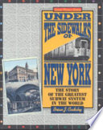

| Author | Book name | Description | Price | Sample image |
|---|---|---|---|---|
| Michael J. Berson | Social Studies on the Internet | This annotated collection includes more than 500 Websites designed to equip elementary, middle, and high school social studies teachers with ideas to engage in best practice, content, and dynamic originality. The text's dual-purpose format helps teachers as they utilize the Internet for professional development and as they introduce the Internet into their classroom learning experiences. | ₱900.00 | |
| Brian J. Cudahy | The Malbone Street Wreck | On November 1, 1918, as the Great War in Europe was entering its final hours, a five-car elevated train was heading for the Flatbush section of Brooklyn with hundreds of homeward-bound commuters aboard. As the train rumbled down a shor hill between Prospect Park and Ebbets Field in the very heart of Brooklyn, the unthinkable happened: the motorman lost control and the train left the tracks as it curved into a tunnel at the foot of the hill. | ₱700.00 | |
| Harcourt School Publishers | We Elect a President | A very brief look at the process of electing a President in the United States. | ₱650.00 | |
| Brian J. Cudahy | Under the Sidewalks of New York: The Story of the Greatest Subway System in the World | Since the first subway opened in 1904, the New York Subway system and its trains have provided millions of New Yorkers with cheap, fast, and remarkably reliable transportation. The New York subway system lacks the electronic complexity of such modern operations as the Washington, D.C. Metro or San Francisco's BART, and New Yorkers have few qualms in admitting that theirs is not the world's most beautiful subway. | ₱800.00 |  |
| Harcourt School Publishers | My Friend, Boots | Part of the History-social science series created to follow the California standards and framework, providing stories of the important people, places, geography, and events which shaped the state of California and the country. | ₱450.00 |